Representación de datos numéricos
Vimos hasta ahora
- Sistemas de numeración decimal, hexadecimal, octal, binario
- Simplificaciones
- Siempre hemos representado enteros
- Siempre no negativos
- Suponíamos infinitos dígitos
- Pero las computadoras adoptan algún sistema de representación con alguna cantidad fija de bits
Clasificación de los números
Representación de datos numéricos
- Enteros
- Signo-Magnitud
- Complemento a 2
- Exceso a $2^{n-1}$
- Fraccionarios
- Punto fijo
- Punto flotante
Rango de representación (RR)
- Intervalo de números representables de un sistema de representación numérica
- Notación $[a, b]$, con $a$ y $b$ límites inferior y superior del RR
- Depende:
- De la cantidad de dígitos del sistema de representación
- De la forma como funciona el sistema de representación
Representación sin signo
- SS(k) expresa sólo números no negativos
- Con $k$ bits, tengo $2^k$ posibilidades: $2 \times 2 \times 2 ... = 2^k$
- Con $k$ bits, el mayor número binario posible es 111111....1 = $\sum_{i=0}^k{2^i} = 2^k-1$
- → Rango de representación $[0, 2^k-1]$
- Con 4 bits: $[0, 2^4-1] = [0, 15]$
- Con 8 bits: $[0, 2^8-1] = [0, 255]$
- Con 16 bits: $[0, 2^{16}-1] = [0, 65.535]$
- Con 32 bits: $[0, 2^{32}-1] = [0, 4.294.967.295]$
Representación con signo
- Permite representar negativos y no negativos
- Varias técnicas
- Signo-magnitud (S-M)
- Complemento a 2 (C2)
- En exceso a $2^n-1$
Preguntas
- ¿Cuáles son los límites del rango de representación de un sistema de representación numérica?
- Un número escrito en un sistema de representación con signo, ¿es siempre negativo?
- ¿Para qué querríamos escribir un número positivo en un sistema de representación con signo?
Sistema de Signo-magnitud
- El primer bit a la izquierda representa el signo
- 0 → positivo
- 1 → negativo
- Los restantes bits, el valor absoluto o magnitud
- Positivos $7_{(10} = 00000111_{(2}$
- Negativos $-7_{(10} = 10000111_{(2}$
- ¿Rango de representación?
RR de SM(k)
- Hay $k$ bits pero uno es para el signo
- El RR de SS(k-1) es $[0, 2^{k-1}-1]$
- SM(k) puede expresar tantos positivos como negativos
- Luego, el RR de SM(k) es $[-(2^{k-1}-1), 2^{k-1}-1]$
- RR SM(4) = $[-(2^{3}-1, 2^{3}-1]$ $=$ $[-7,7]$
- RR SM(8) = $[-(2^{7}-1, 2^{7}-1]$ $=$ $[-127,127]$
- RR SM(16) = $[-(2^{15}-1, 2^{15}-1]$ $=$ $[-32767,32767]$
→ El valor absoluto se expresa en $k-1$ bits
Preguntas
Signo-Magnitud en 8 bits
- $9_{(10} = X_{(2} =$ $00001001$
- $-9_{(10} = X_{(2} =$ $10001001$
- $50_{(10} = X_{(2} =$ $00110010$
- $-50_{(10} = X_{(2} =$ $10110010$
- $-128_{(10} = X_{(2} =$ Imposible
- $10000000_{(2} = X_{(10} =$ ¿Y $00000000_{(2}$?
Sistema de Complemento a 2
- Complemento a 2 corrige los problemas de Signo-magnitud
- Signo-magnitud no utiliza eficientemente el espacio de representación
- No es conveniente para la aritmética
- La forma de representación en $C2$ es diferente
Operación de complemento a 2
- Devuelve el opuesto de un número
- Si $a > 0, -a < 0$
- Si $a < 0, -a > 0$
- Procedimiento
- Se invierten todos los bits
- Se suma 1
- Ejemplo: $111010$ → $000110$
- ¿Son opuestos?
Representar en C2
| Procedimiento | Ejemplo |
|---|---|
| $17_{(10}$ | |
| Se representan como en S-M | $00010001_{(2}$ |
| $-17_{(10}$ | |
| 1. Se expresa su valor absoluto | $00010001_{(2}$ |
| 2. Se invierten todos los bits | $11101110_{(2}$ |
| 3. Se suma 1 | $11101111_{(2}$ |
C2 en 8 bits → decimal
- Lo primero es determinar el signo
- $00010001$ es positivo
- $00010001_{(2} = 17_{(10}$
- $11101111$ es negativo
- Invirtiendo, $1101111_{(2} = 0010000_{(2}$
- $0010000_{(2} + 00000001_{(2} = 0010001_{(2} = 17_{(10}$
- $-1 \times 17 = -17$
Preguntas
Complemento a 2 en 8 bits
- $9_{(10} =$ $00001001_{(2}$
- $-9_{(10} =$ $11110111_{(2}$
- $50_{(10} =$ $00110010_{(2}$
- $-50_{(10} =$ $11001110_{(2}$
- $-128_{(10} =$ $10000000_{(2}$
RR de C2 con $n$ bits
- $-128 = -2^{n-1}$ ⇨ ¡era imposible en S-M!
- RR S-M $n$ bits: $[-(2^{n-1}-1), 2^{n-1}-1]$
- RR C2 n bits: $[-(2^{n-1}), 2^{n-1}-1]$
- El RR de C2 tiene un valor más que el de S-M
Ventajas de C2 sobre S-M
- Un valor más en el RR
- El cero tiene una única representación
- Las cuentas se hacen bit a bit
- Mecanismo de cálculo eficiente
- Fácil implementación computacional
Rangos de Representación
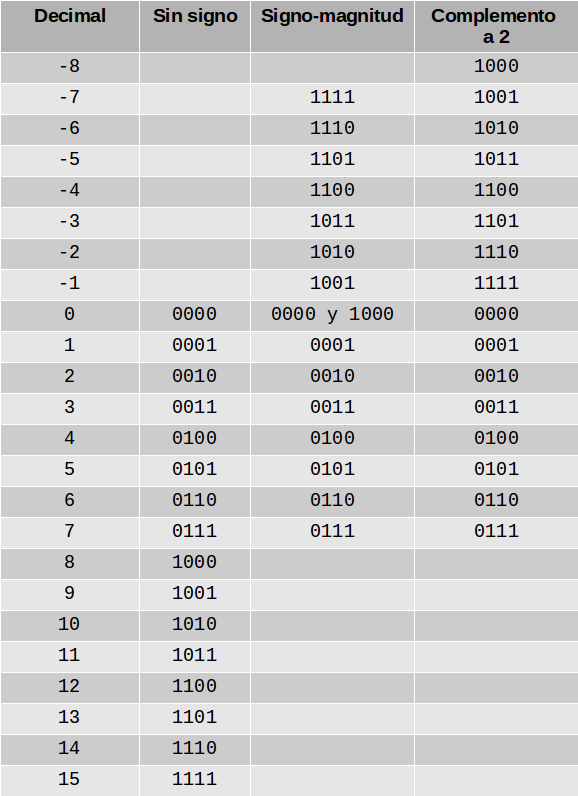Aritmética en C2
- $A + B$
- Las cuentas se hacen bit a bit
- $A - B$
- $A - B = A + (-B)$
- Se complementa $B$ y se suman bit a bit
Aritmética en C2
- Sumar $9 + 8$ en C2, 8 bits
-
$\frac{00001001\\+\\00001000}{00010001}$
Aritmética en C2
- Restar $9 - 8$ en C2, 8 bits
- $9 - 8 = 9 + (-8)$
- Complementamos a 2 el positivo 8
- $-8 = C2(00001000) = 11111000$
- Hacemos la suma
-
$\frac{00001001\\+\\11111000}{00000001}$
Preguntas
- El complemento a 2 de un número, es decir, $C2(x)$, ¿es siempre un número negativo?
- ¿Quién es $C2(0)$?
- ¿Cuánto vale $C2(C2(x))$? Es decir, ¿qué pasa si complemento a 2 el complemento a 2 de $x$?
- ¿Cuánto vale $x + C2(x)$? Es decir, ¿qué pasa si sumo a $x$ su propio complemento a 2?
- ¿Cómo puedo verificar si calculé correctamente un complemento a 2?
Desafío
- Adoptemos la notación $x = (x_{n-1}, ... , x_1, x_0)$ para un número en $C^n_2$, es decir, en complemento a 2 sobre $n$ bits
- Con la notación anterior, comprobar que $x = $ $-1 \times x_{n-1} \times 2^{n-1} + x_{n-2} \times 2^{n-2} +$ $...$ $+ x_1 \times 2 + x_0 =$ $-x_{n-1} \times 2^{n-1}+ \sum_{i=0}^{n-2}({x_i \times 2^i})$
- Con la misma notación, pero si $x$ está en Signo-magnitud, ¿cuál es la expresión de $x$ como función de los dígitos binarios $x_i$?
Overflow o desbordamiento en C2
- Cuando el resultado de una operación excede la cantidad de dígitos del sistema, el resultado es inválido
- Puede ocurrir tanto al sumar dos números positivos como dos negativos
- Condición sobre los dos últimos bits de carry o acarreo
- Diferentes ⇨ hay overflow
- Iguales ⇨ no hay overflow
Bits de acarreo o carry
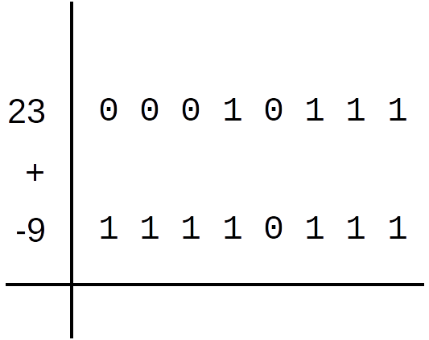Bits de acarreo o carry
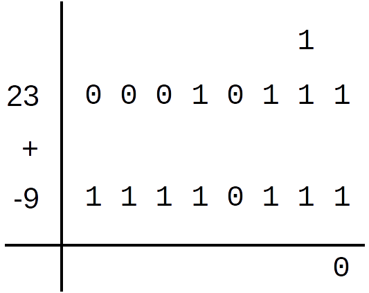Bits de acarreo o carry
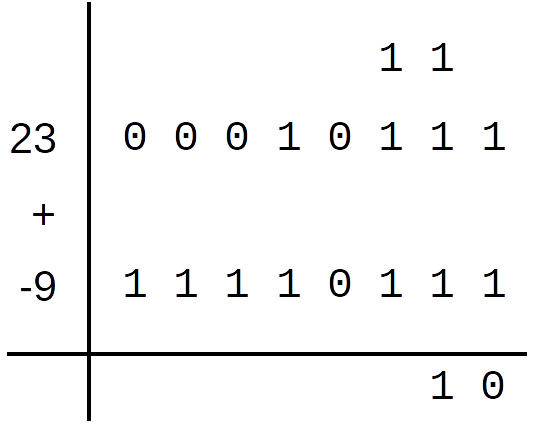Bits de acarreo o carry

Bits de acarreo o carry

Bits de acarreo o carry
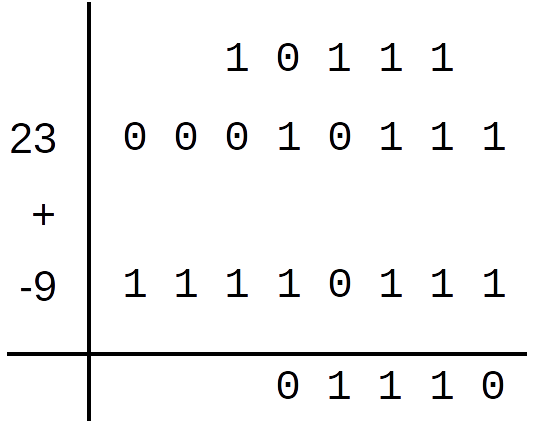Bits de acarreo o carry
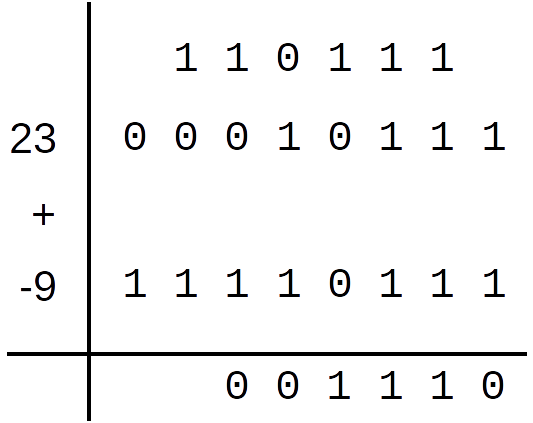Bits de acarreo o carry
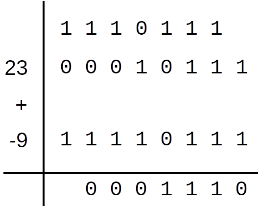Bits de acarreo o carry
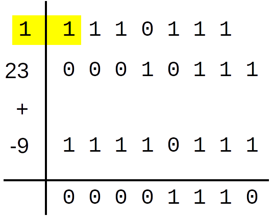Bits de acarreo o carry

Bits de acarreo o carry
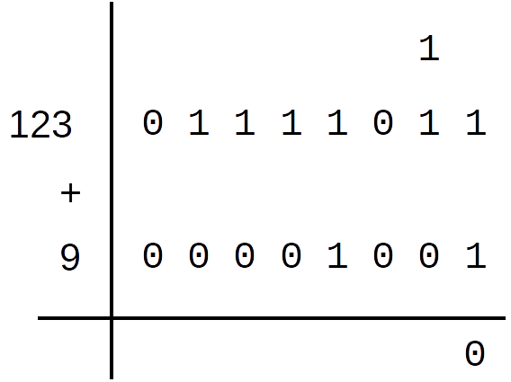Bits de acarreo o carry
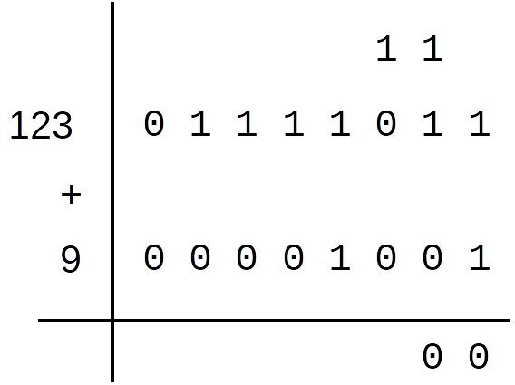Bits de acarreo o carry
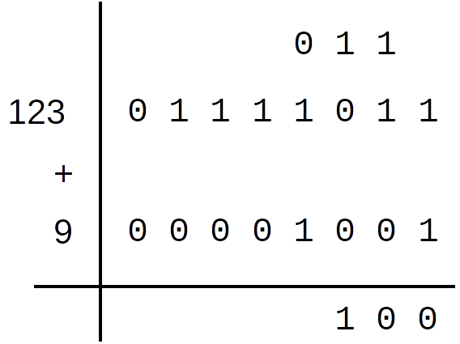Bits de acarreo o carry
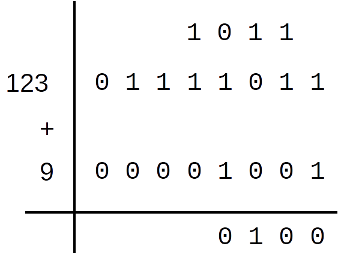Bits de acarreo o carry
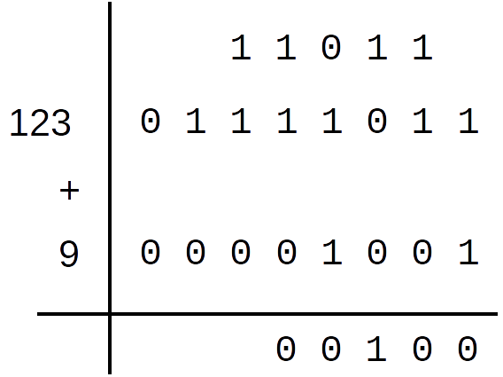Bits de acarreo o carry
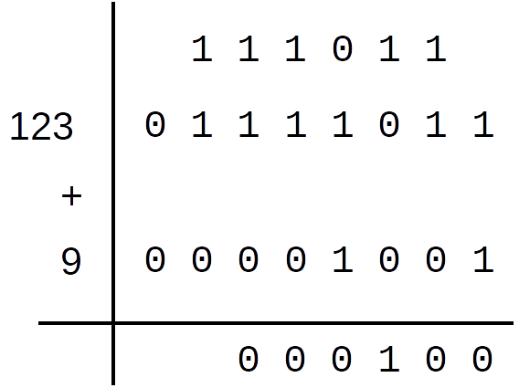Bits de acarreo o carry
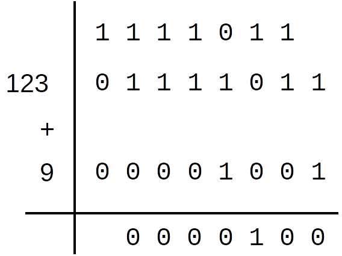Bits de acarreo o carry
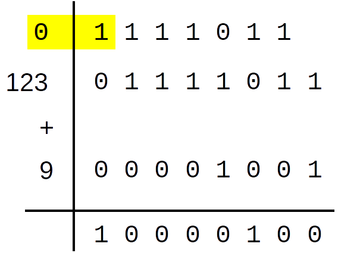Preguntas
- ¿Qué condición sobre los bits de carry permite asegurar que no habrá overflow?
- ¿Para qué sistemas de representación numérica usamos la condición de detección de overflow?
- ¿Puede existir overflow al sumar dos números de diferente signo?
- ¿Qué condición sobre los bits de signo de los operandos permite asegurar que no habrá overflow?
- ¿Puede haber casos de overflow al sumar dos números negativos?
- ¿Puede haber casos de overflow al restar dos números?
Extensión de signo en C2
- Dos operandos en C2 deben tener la misma cantidad de bits
- Si uno fuera más corto que el otro, se necesita extenderlo por la izquierda
- Positivo ⇨ se completa con ceros
- Negativo ⇨ se completa con unos
Extensión de signo en C2
- $A + B = 00101011_{(2} + 00101_{(2}$
- A está en $C^8_2$ y B en $C^5_2$
- Se completa B (positivo) como $00000101_{(2}$
- $A + B = 1010_{(2} + 0110100_{(2}$
- A está en $C^4_2$ y B en $C^7_2$
- Se completa A (negativo) como $1111010_{(2}$
Notación en exceso o Bias
- Utiliza un sistema sin signo en $n$ bits
- Representa un intervalo $[a, b]$ de $2^n$ enteros
- Este intervalo contiene $b - a + 1$ enteros
- Para $[-5, 10]$ es $10 - (-5) + 1 = 16$ ⇨ necesitamos 4 bits
- Para $[-128, 127]$ es $127 - (-128) + 1$ $= 256$ ⇨ necesitamos 8 bits
- Asigna los binarios en orden $a$ ⇨ $0000$, $a + 1$ ⇨ $0001$, ..., $b$ ⇨ $1111$
Exceso para $[-5, 10]$, $n = 4$
| -5 | ⇨ | 0000 | 3 | ⇨ | 1000 | ||
| -4 | ⇨ | 0001 | 4 | ⇨ | 1001 | ||
| -3 | ⇨ | 0010 | 5 | ⇨ | 1010 | ||
| -2 | ⇨ | 0011 | 6 | ⇨ | 1011 | ||
| -1 | ⇨ | 0100 | 7 | ⇨ | 1100 | ||
| 0 | ⇨ | 0101 | 8 | ⇨ | 1101 | ||
| 1 | ⇨ | 0110 | 9 | ⇨ | 1110 | ||
| 2 | ⇨ | 0111 | 10 | ⇨ | 1111 |
Notación en exceso o Bias
- El valor representado es el valor sin signo del binario, más el límite inferior del intervalo
- Se puede representar un intervalo simétrico o no
- Dados A y B es fácil compararlos
- Es decir, determinar si A > B o B > A
- Al contrario que en C2
- La aritmética, sin embargo, es dificultosa
- Usado en representación en punto flotante
Preguntas
Sobre Notación en Exceso
- Dado un valor decimal a representar, ¿cómo calculamos el binario?
- Dado un binario, ¿cómo calculamos el valor decimal representado?
- El sistema en exceso ¿destina un bit para representar el signo?
- ¿Se puede representar un intervalo que no contenga el cero?
- ¿Cómo se comparan dos números en exceso para saber cuál es el mayor?
Coma o punto fraccionario
- En los enteros, está a la derecha de los dígitos y no se escribe
- Marca el lugar donde los exponentes de la base se hacen negativos
$3.14 = 3 \times 10^0 + 1 \times 10^{-1} + 4 \times 10^{-2}$
Fraccionario en base 2 → decimal
$11.101_{(2} = $
$1 \times 2^1 + 1 \times 2^0 +$ $1 \times 2^{-1} + 0 \times 2^{-2} + 1 \times 2^{-3} =$
$2 + 1 + 0.5 + 0 + 0.125 = $
$3.625$
Fraccionario en base 2 → decimal
Otra manera
Notar que $11.101_{(2} =$ $ 11101_{(2} / 8$:
$1 \times 2^1 + 1 \times 2^0 + 1 \times 2^{-1} + 0 \times 2^{-2} + 1 \times 2^{-3} = $
$\frac{1 \times 2^4 + 1 \times 2^3 + 1 \times 2^2 + 0 \times 2^1 + 1 \times 2^0}{2^3} = $ $\frac{16 + 8 + 4 + 0 + 1}{8} = $
$29 / 8 = 3.625$
Decimal fraccionario → base 2
- $3.625 = 3 + 0.625 = PE + PF$
- $PE = 3_{(10} = 11_{(2}$
- $PF = 0.625_{(10}$ $= ?_{(2}$
Decimal fraccionario → base 2, PF
- $PF \times 2 = 0.625 \times 2 = 1.25$ ⇨ $0.25$$ + 1$
- $PF' \times 2 =$ $0.25$ $\times 2 = 0.5$ ⇨ $0.5 + 0$
- $PF'' \times 2 = 0.5 \times 2 = 1.0$ ⇨ $0.0 + 1$
- $PF''' \times 2 = 0.0 \times 2 = 0.0$ ⇨ Fin
- $PF = 0.625$ ⇨ $0.101_{(2}$
- $3.625 = 3 + 0.625 = 11_{(2} + 0.101_{(2} = 11.101_{(2}$
Preguntas
- ¿A qué número decimal corresponde...
- $0011.0000$?
- $0001.1000$?
- $0000.1100$?
- Representación en $PF(8,4)$ de:
- $0.5$
- $-7.5$
- ¿Cuál es el RR de $PF(8,1)$? ¿Y de $PF(8,k)$?
Variables muy diferentes
- "Tiempo en que la luz recorre una millonésima de milímetro"
- $t = e / v$
- $e = 1\ nm = 0,000000001\ m$
- $v = 300.000\ km/s = 300.000.000\ m/s$
Notación científica
- $e = 0.000000001\ m$ $ = 1 \times 10^{-9}\ m$
- $v = 300000000\ m/s$ $ = 3 \times 10^8\ m/s$
- $t = e/v = 0.00000000000000000333\ s$
- $t = e / v = (1 \times 10^{-9}\ m) / (3 \times 10^8\ m/s)$
- $t = e / v = \frac{(1 \times 10^{-9}\ m)}{(3 \times 10^8\ m/s)}$ $ = \frac{1}{3} \times \frac{10^{-9}\ m}{10^8\ m/s}$
- $t = 1 / 3 \times 10^{-9-8}\ s \Longrightarrow t = 0.333 \times 10^{-17}\ s$
Notación científica
- $t = 0.333 \times 10^{-17}\ s$
- Coeficiente = $0.333$
- Exponente = $-17$
- Normalización
- $1 <= coeficiente < base$
- $0.333 \times 10^{-17} = 3.33 \times 10^{-18}$
Representación en punto flotante
- Formato IEEE 754 single precision, 32 bits
- 1 bit de signo
- 8 bits para el exponente (en exceso 127)
- 23 bits para la mantisa
- Formato IEEE 754 double precision, 64 bits
- 1 bit de signo
- 11 bits para el exponente (en exceso 1023)
- 52 bits para la mantisa
Formato IEEE 754 single precision
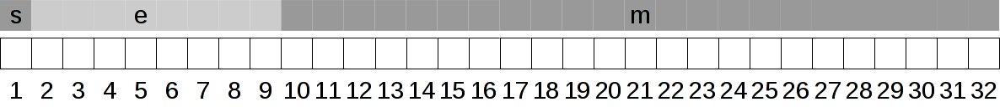Decimal a punto flotante
- Separar el signo y escribir el valor absoluto en base 2
- Convertirlo a notación científica en base 2 normalizada
- Expresar el exponente en notación en exceso
- Guardar el coeficiente sin parte entera en la mantisa
Decimal a punto flotante
1. Escribir el valor absoluto en base 2
- Lo vimos al convertir un decimal fraccionario a base 2
- Separo y guardo el signo
Decimal a punto flotante
2. Convertir a notación científica base 2
- Desplazo el punto fraccionario hasta dejar un 1 en la parte entera
- Compenso la multiplicación o división por $2^k$ que hice
- $101.11 = 1.0111 \times 2^2$
- $0.0011111 = 1.1111 \times 2^{-3}$
- Obtuve coeficiente y exponente
Decimal a punto flotante
3. Expresar el exponente
- El exponente puede ser positivo o negativo
- Se representa en exceso a 127
- → Se le suma 127 para obtener un número no negativo
Decimal a punto flotante
4. Guardar la mantisa
- El primer dígito del coeficiente es siempre 1
- → no hace falta almacenarlo
- Se guarda $coeficiente - 1$, completando con ceros
Ejemplo Punto Flotante $n = -5.5$
- Separar el signo y escribir el valor absoluto en base 2
- $s = 1$
- $|n| = 5.5_{(10} = 101.1_{(2}$
- Convertirlo a notación científica en base 2 normalizada
- $101.1 = 1.011 \times 2^2$
- Expresar el exponente en notación en exceso
- $e = 2 + 127 = 129$
- Guardar el coeficiente sin parte entera en la mantisa
- $1.011 - 1 = .011$ → $m = 011000...$
Ejemplo de Punto Flotante
$n = -5.5$
s = 1, e = 129, m = 011000...
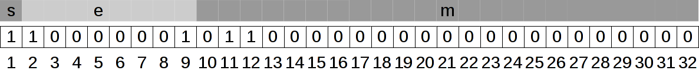
Resultado en hexadecimal
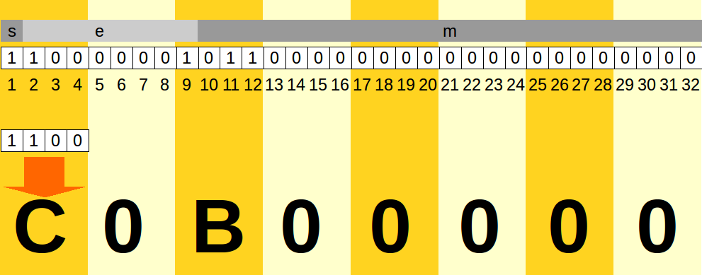Punto Flotante → decimal
- Usando $s$, $e$ y $m$:
- $s = 1 \Longrightarrow (-1)^s = -1$
- $e = 129 \Longrightarrow 2^{(e-127)} = 2^2$
- $m = 011000... \Longrightarrow 1.m = 1.011000...$
- Resulta $n = (-1) \times 2^2 \times 1.011000..._{(2} =$ $(-1) \times 101.1000..._{(2} =$ $(-1) \times 5.5 = -5.5$
$n = (-1)^s \times 2^{(e-127)} \times (1 + m)$
Error de aproximación
$ python
Python 2.7.9 (default, Mar 1 2015, 12:57:24)
[GCC 4.9.2] on linux2
Type "help", "copyright", "credits" or "license" for more information.
>>> a = 0.1
>>> b = 0.2
>>> c = a + b
>>> c == a + b
True
>>> c == 0.3
False
>>> c
0.30000000000000004

Cálculo de punto flotante
| Decimal | |
| Signo | |
| Exponente | |
| Mantisa | |
| Hexa |
$ $
Punto flotante, casos especiales
| Clase de números | Exponente | Mantisa | Signo |
|---|---|---|---|
| Ceros | $0$ | $0$ | $+/-$ |
| Desnormalizados | $0$ | $\neq 0$ | $+/-$ |
| Normalizados | $\neq 0$ | Cualquiera | $+/-$ |
| Infinito | $1...1$ | $0$ | $+/-$ |
| NaN (Not a Number) | $1...1$ | $\neq 0$ | $+/-$ |
Preguntas
- ¿Cuál es el RR de IEEE754, precisión simple?
- Usando el calculador de IEEE754 contenido en este material, o cualquier otro:
- ¿Qué pasa con el resultado a medida que agregamos muchos decimales?
- ¿Qué pasa con el resultado si ingresamos números enormes como 1e30 (que significa $1 \times 10^{30}$), 1e35, etc.?
- Si ingresamos el dato $0.1$, ¿qué resultado da $(-1)^s \times 2^{e-127} \times (1+m)$? ¿Se reconstruye exactamente el valor $0.1$? ¿Cuál es el error en este caso?
Representación de datos numéricos
- Enteros
- Signo-Magnitud ✔
- Complemento a 2 ✔
- Exceso a $2^{n-1}$ ✔
- Fraccionarios
- Punto fijo ✔
- Punto flotante ✔